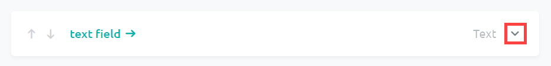
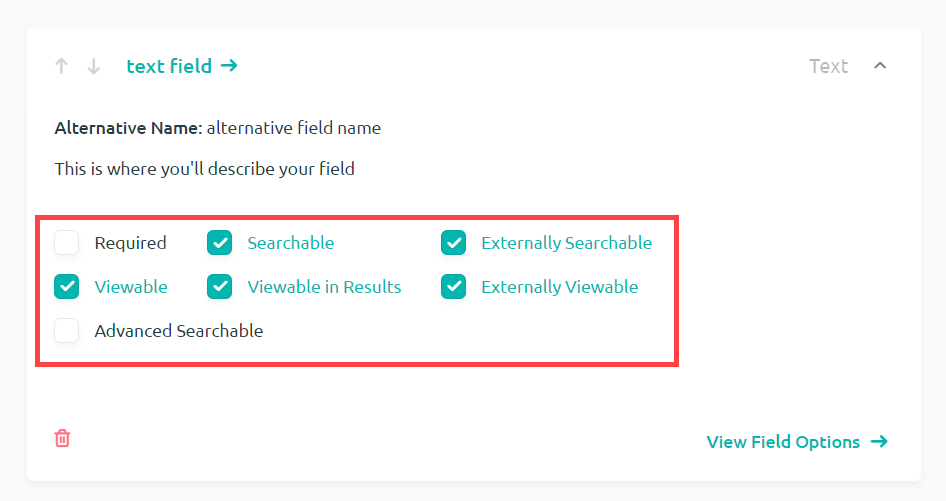
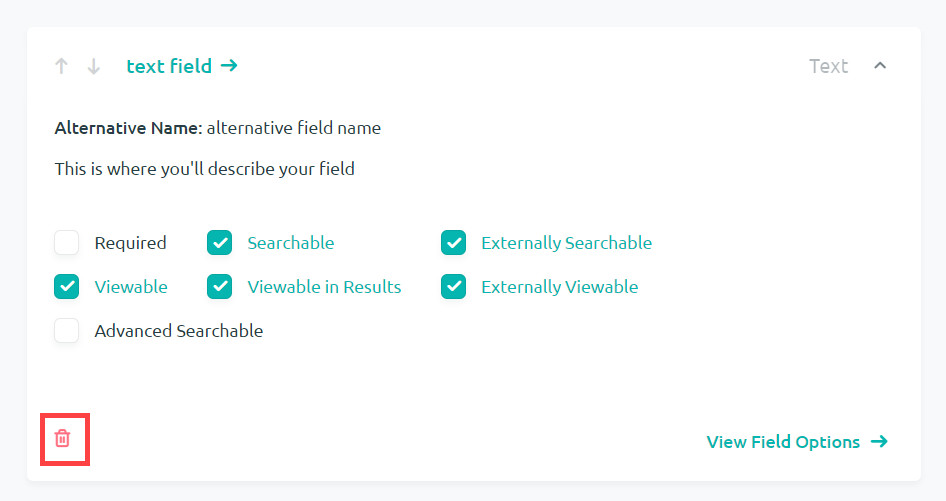
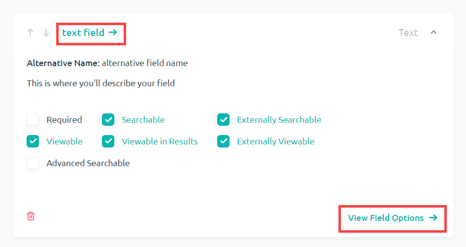
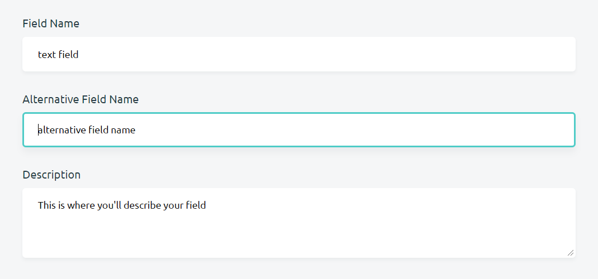
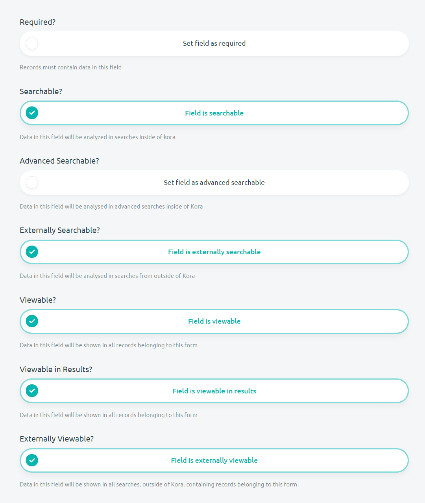
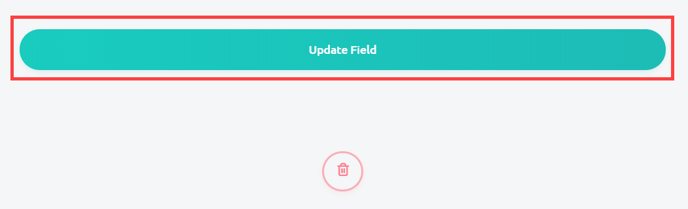
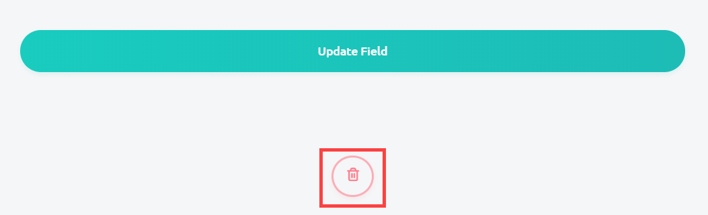

Editing Fields
A form can contain a number of different field types which allow you to customize how data is entered into a record. In addition to field types, however, there are further customizations to fields that can be made in order to manipulate how data is entered. This documentation will cover how and were to edit your fields, and what options are available during this editing.
Editing Fields from the Form Home Page
There are a two ways to edit the fields that you've created: from the form page, and within the field page. This section will cover how to edit your fields from the form home.
-
From the form home, open up a field box by pressing the arrow button located in the right of all field boxes. The first field within your form pages should already be open.

-
Once you have opened up a field, there are seven boxes that you are able to check that will give your field certain attributes. Which boxes you check should be automatically saved by Kora. See the section on "Field Options Descriptions" below for a better understanding of what these options do.

-
The last option that you are able to take advantage of from the Form Home page is the ability to delete fields. Simply press the red trash can to delete any unwanted fields. You will be asked if you are sure if you want to delete this field.

Editing in the Field Options Page
You can edit additional information about the field by clicking on the name of the field or the field options button from the Form Home page.

There are three sections available to edit from the Field Page:
-
The Field Name, Alternative Name and Description can all be modified from whatever values were put in when creating the field. Clicking on the name of the field or the field options button.

-
Each field type will then have its own specialized set of advanced options available in the next section. Go to the Understanding Field Types documentation to get a better understanding of how these advanced options work.
-
The last section available when editing a form will be the same options available in step 2 of "Editing Fields from the Form Home Page". These are seven options which can be checked to give your field certain attributes. See the section on "Field Options Descriptions" below for a better understanding of what these options do.

-
Click Update Field at the bottom of the page to save any changes that you've made while editing your fields.

-
If you wish to delete the field, click on the red trash can at the very bottom of the page. You will be asked if you are sure if you want to delete this field.

Field Options Descriptions
There are seven options which can be edited from both the Form Home page, and the Field Options page. These are labeled as: Required, Searchable, Advanced Searchable, Externally Searchable, Viewable, Viewable in Results, and Externally Viewable.
-
Required: checking the Required option will force anybody creating a record for this form to fill out this field. A value will have to be entered in order for Kora to accept the record, or a new value will have to be entered if a default value is deleted.
-
Searchable: checking the Searchable option will allow Kora to see any data that is entered into this field when conducting any searches.
-
Advanced Searchable: checking the Advanced Searchable* option will allow Kora to search for any data entered into this field when conducting advanced searches.
-
Externally Searchable: checking the Externally Searchable option will allow programs which have access to Kora's API to search for data located within this field in records. This is especially useful when you have a website that you want to be able to pull data from KORA.
-
Viewable: checking the Viewable option will make this field appear when you are creating or viewing a record with this field. This may come in use if you are unsure of a particular field you have created. You may make it unviewable to those creating records until you have time to come back to it in the future.
-
Viewable in Results: Checking this box affects only how the data from this field shows up when browsing or searching records. This option is incredibly useful for managing the readability of your records in Kora. Instead of having 20 fields of data show up for each record you search for, you are able to narrow it down to fields such as name, id, or whatever is useful to you. It is important to note that this option will not affect whether or not this field is searchable, and all fields will be viewable from the full record page.
-
Externally Viewable: checking the Externally Viewable option will allow programs which have access to Kora's API to view the data located within this field in your Kora records. This is especially useful when you have a website that you want to be able to pull data from KORA.